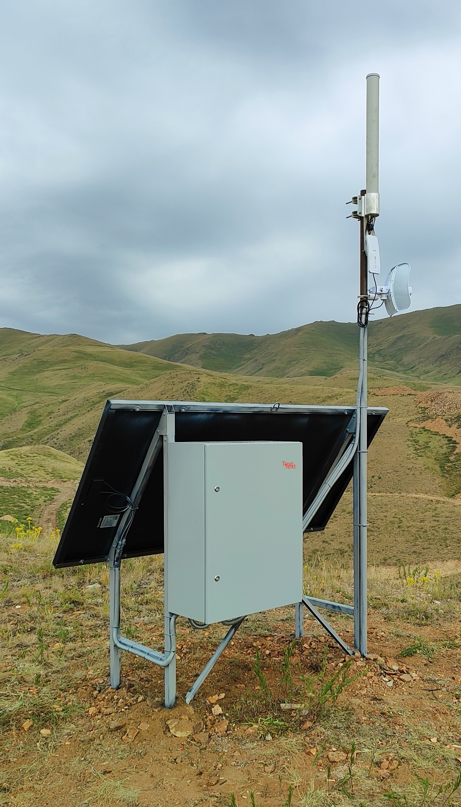
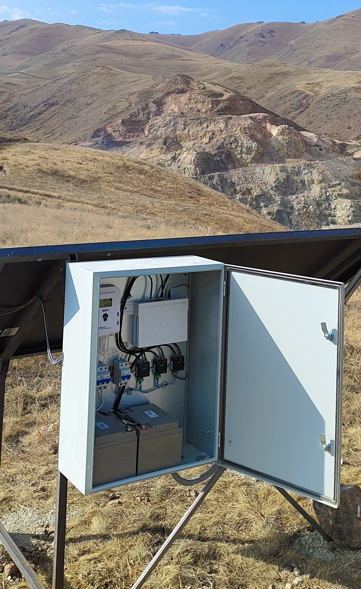
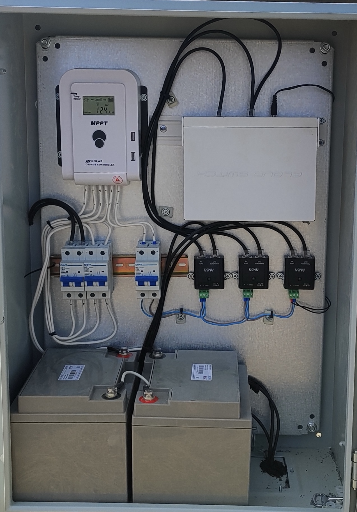
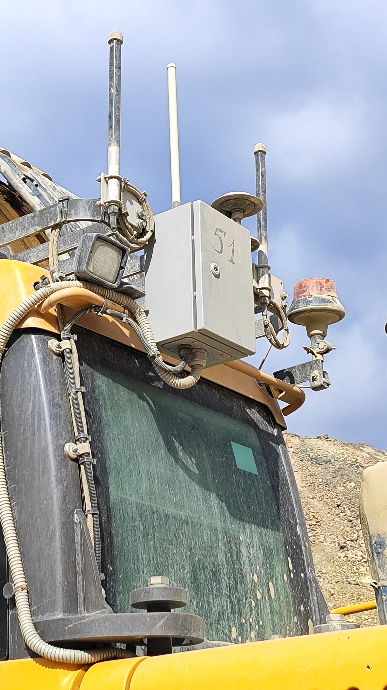
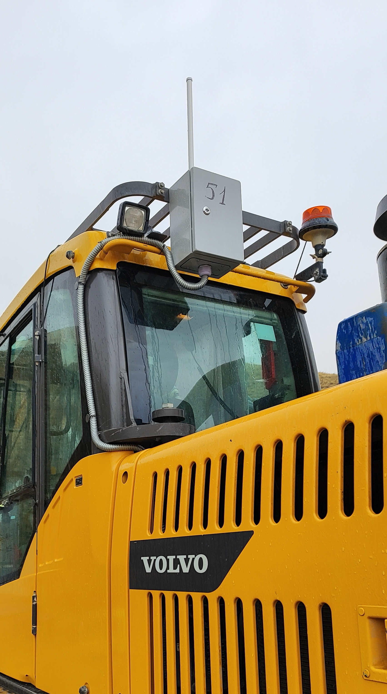
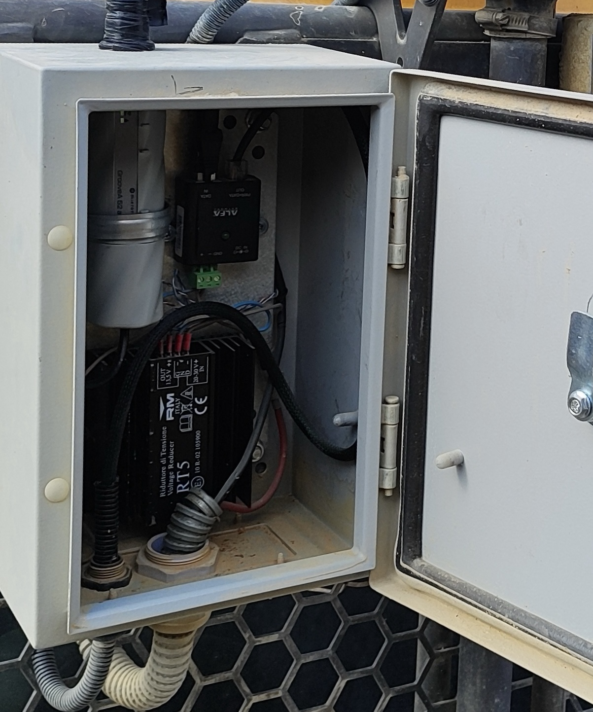
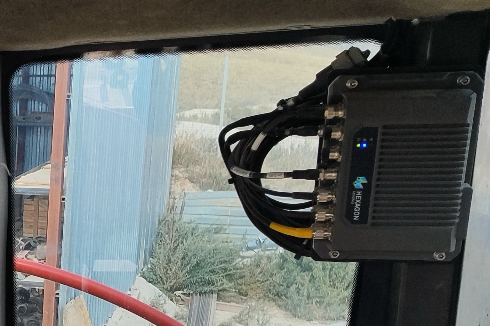
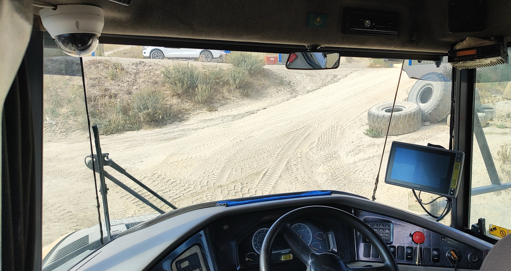

Интеграция систем АСУ ГТК, высокоточного позиционирования и связи для тяжелой карьерной техники.
Комплексный подход к диспетчеризации горнорудного транспорта. От установки автономных ретрансляторов до монтажа бортовых компьютеров и V2X антенн. Связываем оборудование с единым центром управления предприятием.
В условиях сложного рельефа мы разворачиваем независимые точки передачи данных. Они обеспечивают стабильное покрытие стандартов WLL, WiMax и WiFi для сбора телеметрии со всей техники.


Промышленное оборудование связи требует стабильного напряжения. Мы собираем и монтируем распределительные щиты, способные работать при экстремальных перепадах температур.

Мы интегрируем элементы АСУ ГТК на базе спецтехники Volvo. Монтаж датчиков, антенн высокоточной навигации и V2X выполняется с учетом сильной вибрации и запыленности карьера.


Для корректной работы систем позиционирования необходимо адаптировать электропитание машины под нужды слаботочных систем.

Организация единого бортового интерфейса прямо перед глазами машиниста. Система позволяет синхронизировать действия оператора с диспетчером для оптимизации маршрутов.

